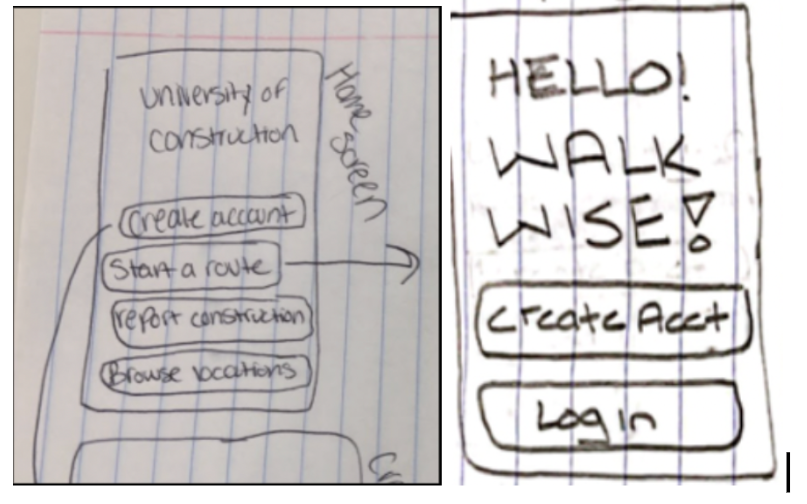
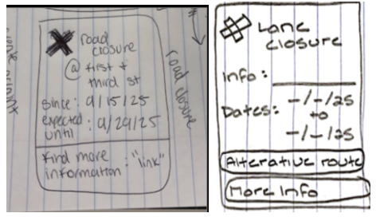
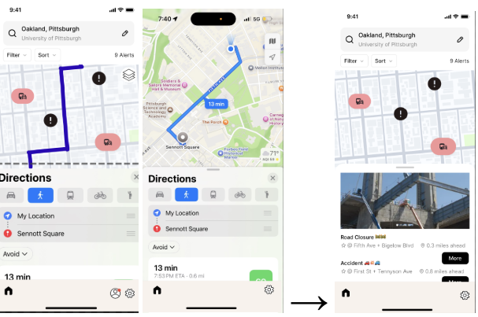
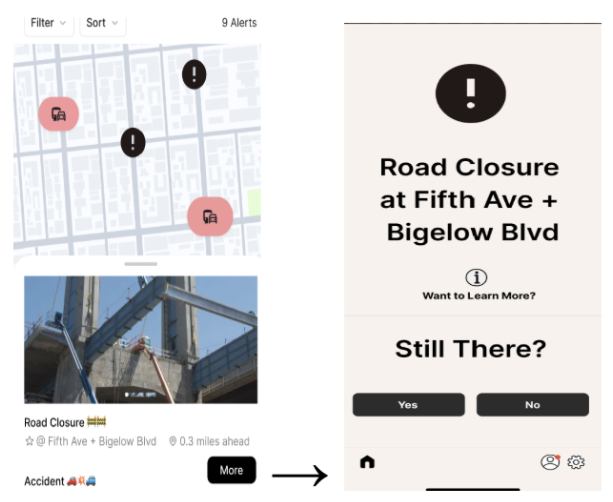
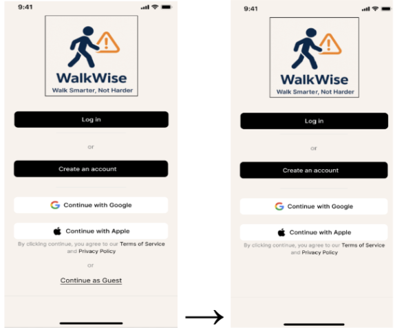

Prototypes
We moved from quick lo-fi sketches to hi-fi interactive prototypes. Each stage helped us
refine navigation, information layout, and social features.
Lo-Fi Prototypes
Early paper and low-fidelity screens helped us decide what belonged on the home screen,
how lane closures should appear, and whether social features were worth including.

Home Screen – simplified
Early home screen was cluttered with too many buttons. Later versions reduced options and
made the main map more prominent.

Lane Closure – more context
Initial design only showed a closure marker. We later added more detail and an
obvious button to view an alternate route.

Social Features – added later
The first version lacked social features. We introduced a basic community space
so users could share updates and feel confident in the data.
Hi-Fi Prototypes
High-fidelity prototypes were used in usability testing. They helped us refine layers,
information cards, and sign-in behavior based on user feedback.

Unified Map + Layers
Instead of separate maps for navigation and hazards, we added a layers button to toggle
routes, hazards, or both, and highlighted safe routes versus active closures.

Construction Detail Card
Pins now open a detailed card with status, estimated completion dates, and a
“learn more” option instead of only showing a location name.

Guest Mode
Usability testing showed some users didn’t want to create an account immediately, so we
added a Continue as Guest option with limited but useful access.
Interactive prototype:
Open WalkWise hi-fi prototype (Figma)